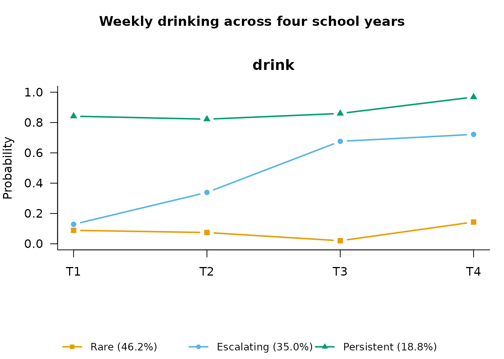

Repeated-measures latent class analysis (RMLCA) treats the whole trajectory of a repeated item as the thing to classify: each latent class is a typical pattern of responses over time, with no growth-curve shape imposed (Collins & Lanza, 2010, ch. 7). It is the natural first longitudinal model when you suspect qualitatively different pathways — say, “persistent”, “declining”, and “rare” — rather than variation around one common curve.
Simulated example: weekly drinking across four school years
We simulate a cohort of 900 students reporting weekly alcohol use (yes/no) in each of four school years, generated from three known trajectory classes so the model has a truth to recover:
- Rare (50%): low probability of use at every wave;
- Escalating (30%): probability rising steeply across waves;
- Persistent (20%): high probability throughout.
set.seed(2026)
n <- 900
cls <- sample(1:3, n, replace = TRUE, prob = c(0.5, 0.3, 0.2))
p <- rbind(
c(0.08, 0.10, 0.12, 0.12), # Rare
c(0.15, 0.35, 0.60, 0.80), # Escalating
c(0.85, 0.85, 0.90, 0.90) # Persistent
)
drink <- sapply(1:4, function(t) rbinom(n, 1, p[cls, t]))
colnames(drink) <- paste0("drink_y", 1:4)
head(drink)
#> drink_y1 drink_y2 drink_y3 drink_y4
#> [1,] 0 0 1 1
#> [2,] 0 0 0 1
#> [3,] 0 0 0 0
#> [4,] 0 0 0 0
#> [5,] 0 0 1 1
#> [6,] 0 0 0 0How many trajectory classes?
compare_longitudinal() fits a range of class counts (an
RMLCA is fitted via fit_rmlca(), which needs to know how
the columns map to occasions — here four waves of one item):
selection <- compare_longitudinal(drink, k_range = 2:4, model = "rmlca",
times = 4, n_init = 10, verbose = FALSE)BIC correctly picks the three classes we generated.
The three-class solution
fit <- fit_rmlca(drink, n_classes = 3, times = 4, n_init = 20,
random_state = 7)
fit
#>
#> =========================================================
#> REPEATED-MEASURES LATENT CLASS MODEL
#> =========================================================
#> Items x Occasions : 1 x 4
#> Item parameters : binary, estimated separately at each occasion
#> =========================================================
#> LATENT MIXTURE MODEL
#> =========================================================
#> Classes Estimated : 3
#> Estimation Method : 1-step
#> Converged : TRUE (in 212 iterations)
#> ---------------------------------------------------------
#> Log-Likelihood : -1981.32
#> Parameters : 14
#> AIC : 3990.64
#> BIC : 4057.88
#> SABIC : 4013.41
#> Rel. Entropy : 0.6457
#> Best solution : found by 20 of 20 starts
#> ---------------------------------------------------------
#> Class Weights (Sizes):
#> Class 1: 46.18%
#> Class 2: 35.03%
#> Class 3: 18.79%
#> =========================================================
#> Type summary(model) for structural parameters or measurement_summary(model) for item parameters.The item-response probabilities per wave — the trajectories
themselves — come from measurement_summary(), and
plot() draws them:
params <- measurement_summary(fit)
#> =========================================================
#> MEASUREMENT MODEL PARAMETERS
#> =========================================================
#>
#> Categorical Probabilities: T1
#> Indicator | Overall | Class 1 | Class 2 | Class 3
#> ------------------------------------------------------------
#> drink@T1 | 0.244 | 0.089 | 0.129 | 0.842
#>
#> Categorical Probabilities: T2
#> Indicator | Overall | Class 1 | Class 2 | Class 3
#> ------------------------------------------------------------
#> drink@T2 | 0.308 | 0.074 | 0.339 | 0.823
#>
#> Categorical Probabilities: T3
#> Indicator | Overall | Class 1 | Class 2 | Class 3
#> ------------------------------------------------------------
#> drink@T3 | 0.408 | 0.020 | 0.676 | 0.860
#>
#> Categorical Probabilities: T4
#> Indicator | Overall | Class 1 | Class 2 | Class 3
#> ------------------------------------------------------------
#> drink@T4 | 0.501 | 0.144 | 0.722 | 0.968
#> =========================================================
plot(fit, class_labels = c("Rare", "Escalating", "Persistent"),
main = "Weekly drinking across four school years")
The recovered curves match the generating probabilities well: a flat low class, a steeply rising class, and a flat high class, with sizes close to the simulated 50/30/20 split.
Who follows which pathway?
Predictors of trajectory-class membership use the same stepwise
workflow as any other mixtureEM model: hand the fitted model to
add_covariates(). We simulate a covariate that genuinely
raises the odds of the Escalating pathway:
risk <- rnorm(n, mean = ifelse(cls == 2, 0.8, 0))
fit_cov <- add_covariates(fit, risk)
#> Using 'ML' bias correction (set `correction` to override).
results <- summary(fit_cov)
#> =========================================================
#> STRUCTURAL MODEL SUMMARY
#> =========================================================
#>
#> CATEGORICAL LATENT VARIABLE REGRESSION (CLASS PREDICTORS)
#> Reference Class: 1
#> Standard errors: Bakk-Oberski-Vermunt corrected (robust step 3, hessian step 1)
#> ---------------------------------------------------------
#> OR [95% CI] P-Value
#>
#> Class 2 ON
#> Intercept 0.606 [ 0.286, 1.281] 0.190
#> risk 1.890 [ 1.410, 2.534] < .001
#>
#> Class 3 ON
#> Intercept 0.409 [ 0.196, 0.853] 0.017
#> risk 0.982 [ 0.719, 1.341] 0.907
#>
#> OMNIBUS TEST PER COVARIATE (effect across all classes)
#> ---------------------------------------------------------
#> Wald Chi2 df P-Value
#> risk 21.253 2 < .001
#> Note: a non-significant test beside large coefficients can be the
#> Hauck-Donner effect; confirm with wald_omnibus_test().
#> =========================================================The escalating class shows the elevated odds ratio for
risk, as simulated; the persistent class does not.
RMLCA or LTA?
RMLCA classifies whole trajectories; latent transition
analysis (LTA) instead models wave-to-wave movement between statuses. If
your question is “what pathways exist?”, RMLCA answers it directly; if
it is “who moves, when, and toward what?”, see the latent transition
analysis vignette
(vignette("lta", package = "mixtureEM")).
References
Collins, L. M., & Lanza, S. T. (2010). Latent class and latent transition analysis: With applications in the social, behavioral, and health sciences. Wiley.
Lanza, S. T., & Collins, L. M. (2006). A mixture model of discontinuous development in heavy drinking from ages 18 to 30: The role of college enrollment. Journal of Studies on Alcohol, 67(4), 552–561. https://doi.org/10.15288/jsa.2006.67.552